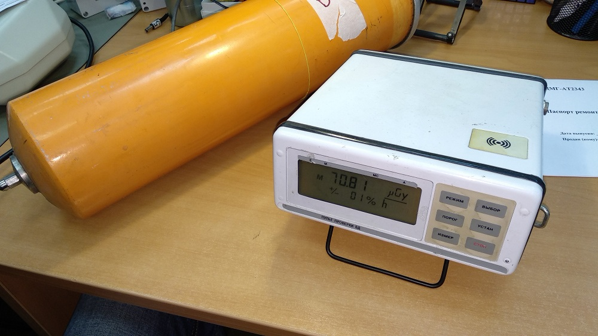
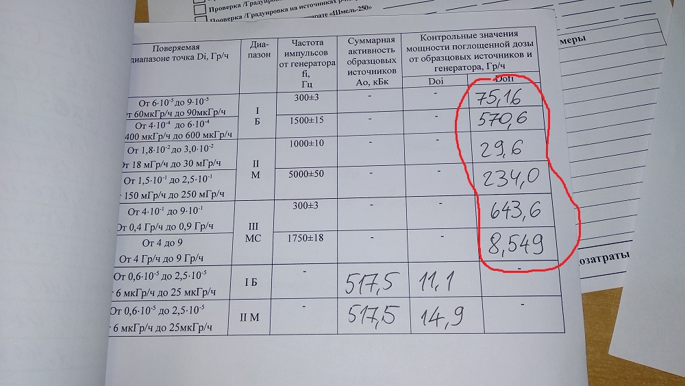

БДМГ-АТ2343. Проверка пультом

- Нажать ИЗМЕР — включится, дождаться загрузки
- ВЫБОР → УСТ → ВЫБОР → ВЫБОР → ВЫБОР →
УСТ → ИЗМ → СТОП → ПОРОГ
→ СТОП
Всё настроено, можно мерить
- РЕЖИМ — выбрать режим (Б/М/МС)
- ВЫБОР — выбрать частоту (300/1500 для Б и т.д.)
- ИЗМЕР — запустить измерения
После окончания текущего измерения
- СТОП , затем выбрать другой режим и/или частоту
Всего нужно провести 6 измерений, заполнить таблицу:
